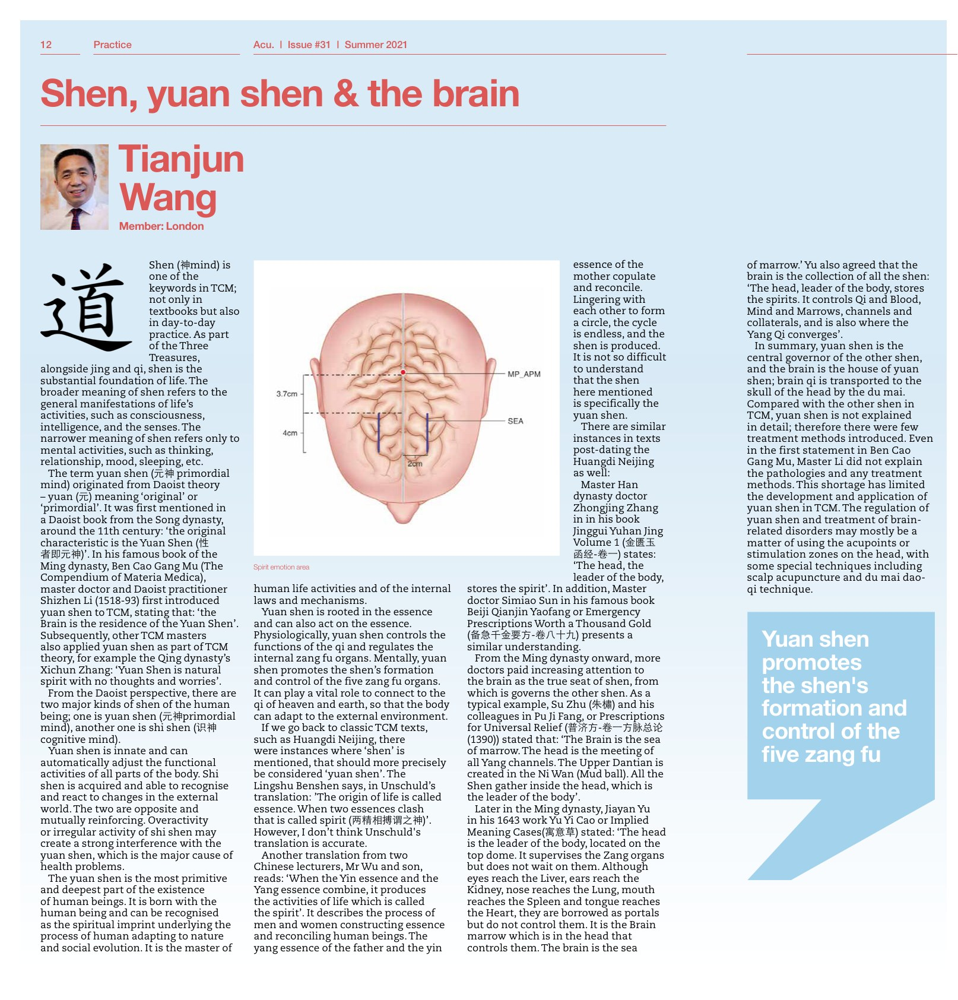

Văn bản dưới đây được phục hồi từ lớp văn bản của file PDF bản quét, sau khi nối lại các dòng bị ngắt bởi khổ bốn cột. Các lỗi chính tả / ngữ pháp của bản in được giữ nguyên (thí dụ «in in his book», «from which is governs the other shen»), để người đọc đối chiếu được với bản dịch Việt đã hiệu đính nhẹ. Chữ Hán in trong ngoặc đơn được giữ nguyên dạng chữ.
Câu trích nổi in xanh và chú thích của sơ đồ não là những thành tố đồ họa tách khỏi dòng chữ, nên được xếp riêng ở cuối, đúng vị trí tương đối trên trang in.
Shen (神mind) is one of the keywords in TCM; not only in textbooks but also in day-to-day practice. As part of the Three Treasures, alongside jing and qi, shen is the substantial foundation of life. The broader meaning of shen refers to the general manifestations of life's activities, such as consciousness, intelligence, and the senses. The narrower meaning of shen refers only to mental activities, such as thinking, relationship, mood, sleeping, etc.
The term yuan shen (元神 primordial mind) originated from Daoist theory – yuan (元) meaning ‘original’ or ‘primordial’. It was first mentioned in a Daoist book from the Song dynasty, around the 11th century: ‘the original characteristic is the Yuan Shen (性者即元神)’. In his famous book of the Ming dynasty, Ben Cao Gang Mu (The Compendium of Materia Medica), master doctor and Daoist practitioner Shizhen Li (1518-93) first introduced yuan shen to TCM, stating that: ‘the Brain is the residence of the Yuan Shen’. Subsequently, other TCM masters also applied yuan shen as part of TCM theory, for example the Qing dynasty's Xichun Zhang: ‘Yuan Shen is natural spirit with no thoughts and worries’.
From the Daoist perspective, there are two major kinds of shen of the human being; one is yuan shen (元神primordial mind), another one is shi shen (识神 cognitive mind). Yuan shen is innate and can automatically adjust the functional activities of all parts of the body. Shi shen is acquired and able to recognise and react to changes in the external world. The two are opposite and mutually reinforcing. Overactivity or irregular activity of shi shen may create a strong interference with the yuan shen, which is the major cause of health problems.
The yuan shen is the most primitive and deepest part of the existence of human beings. It is born with the human being and can be recognised as the spiritual imprint underlying the process of human adapting to nature and social evolution. It is the master of human life activities and of the internal laws and mechanisms.
Yuan shen is rooted in the essence and can also act on the essence. Physiologically, yuan shen controls the functions of the qi and regulates the internal zang fu organs. Mentally, yuan shen promotes the shen's formation and control of the five zang fu organs. It can play a vital role to connect to the qi of heaven and earth, so that the body can adapt to the external environment.
If we go back to classic TCM texts, such as Huangdi Neijing, there were instances where ‘shen’ is mentioned, that should more precisely be considered ‘yuan shen’. The Lingshu Benshen says, in Unschuld's translation: ’The origin of life is called essence. When two essences clash that is called spirit (两精相搏谓之神)’. However, I don’t think Unschuld's translation is accurate.
Another translation from two Chinese lecturers, Mr Wu and son, reads: ‘When the Yin essence and the Yang essence combine, it produces the activities of life which is called the spirit’. It describes the process of men and women constructing essence and reconciling human beings. The yang essence of the father and the yin essence of the mother copulate and reconcile. Lingering with each other to form a circle, the cycle is endless, and the shen is produced. It is not so difficult to understand that the shen here mentioned is specifically the yuan shen.
There are similar instances in texts post-dating the Huangdi Neijing as well: Master Han dynasty doctor Zhongjing Zhang in in his book Jinggui Yuhan Jing Volume 1 (金匮玉函经-卷一) states: ‘The head, the leader of the body, stores the spirit’. In addition, Master doctor Simiao Sun in his famous book Beiji Qianjin Yaofang or Emergency Prescriptions Worth a Thousand Gold (备急千金要方-卷八十九) presents a similar understanding.
From the Ming dynasty onward, more doctors paid increasing attention to the brain as the true seat of shen, from which is governs the other shen. As a typical example, Su Zhu (朱橚) and his colleagues in Pu Ji Fang, or Prescriptions for Universal Relief (普济方-卷一方脉总论 (1390)) stated that: ‘The Brain is the sea of marrow. The head is the meeting of all Yang channels. The Upper Dantian is created in the Ni Wan (Mud ball). All the Shen gather inside the head, which is the leader of the body’.
Later in the Ming dynasty, Jiayan Yu in his 1643 work Yu Yi Cao or Implied Meaning Cases(寓意草) stated: ‘The head is the leader of the body, located on the top dome. It supervises the Zang organs but does not wait on them. Although eyes reach the Liver, ears reach the Kidney, nose reaches the Lung, mouth reaches the Spleen and tongue reaches the Heart, they are borrowed as portals but do not control them. It is the Brain marrow which is in the head that controls them. The brain is the sea of marrow.’ Yu also agreed that the brain is the collection of all the shen: ‘The head, leader of the body, stores the spirits. It controls Qi and Blood, Mind and Marrows, channels and collaterals, and is also where the Yang Qi converges’.
In summary, yuan shen is the central governor of the other shen, and the brain is the house of yuan shen; brain qi is transported to the skull of the head by the du mai. Compared with the other shen in TCM, yuan shen is not explained in detail; therefore there were few treatment methods introduced. Even in the first statement in Ben Cao Gang Mu, Master Li did not explain the pathologies and any treatment methods. This shortage has limited the development and application of yuan shen in TCM.
The regulation of yuan shen and treatment of brain-related disorders may mostly be a matter of using the acupoints or stimulation zones on the head, with some special techniques including scalp acupuncture and du mai dao-qi technique.
“Yuan shen promotes the shen's formation and control of the five zang fu”
Spirit emotion area (caption of the scalp-acupuncture diagram)

| Nguyên bản | Bản dịch Việt |
|---|---|
| shen 神 | thần |
| yuan shen 元神 (primordial mind) | nguyên thần / tâm nguyên thủy |
| shi shen 识神 (cognitive mind) | thức thần / tâm nhận thức |
| jing / qi / Three Treasures | tinh / khí / Tam Bảo |
| essence | tinh |
| zang fu / five zang fu | tạng phủ / ngũ tạng |
| Huangdi Neijing / Lingshu Benshen | Hoàng Đế Nội Kinh / Linh Khu · Bản Thần |
| Ben Cao Gang Mu / Shizhen Li | Bản Thảo Cương Mục / Lý Thời Trân |
| Xichun Zhang | Trương Tích Thuần |
| Zhongjing Zhang / Jinggui Yuhan Jing | Trương Trọng Cảnh / Kim Quỹ Ngọc Hàm Kinh |
| Simiao Sun / Beiji Qianjin Yaofang | Tôn Tư Mạc / Bị Cấp Thiên Kim Yếu Phương |
| Su Zhu 朱橚 / Pu Ji Fang | Chu Túc / Phổ Tế Phương |
| Jiayan Yu / Yu Yi Cao | Dụ Gia Ngôn / Ngụ Ý Thảo |
| Upper Dantian / Ni Wan / marrow | Thượng đan điền / Nê Hoàn / tủy |
| du mai / dao-qi | đốc mạch / đạo khí |
| scalp acupuncture / Spirit emotion area | châm cứu đầu da / vùng tinh thần – cảm xúc |
Nguồn: Tianjun Wang, Shen, yuan shen & the brain, Acu. số 31, Summer 2021, chuyên mục Practice, tr. 12. Bản dịch tiếng Việt toàn văn, giữ nguyên mạch lập luận của bài in.